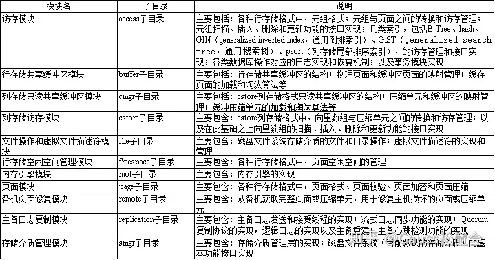
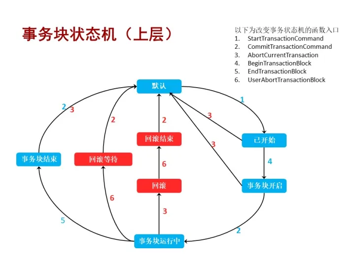
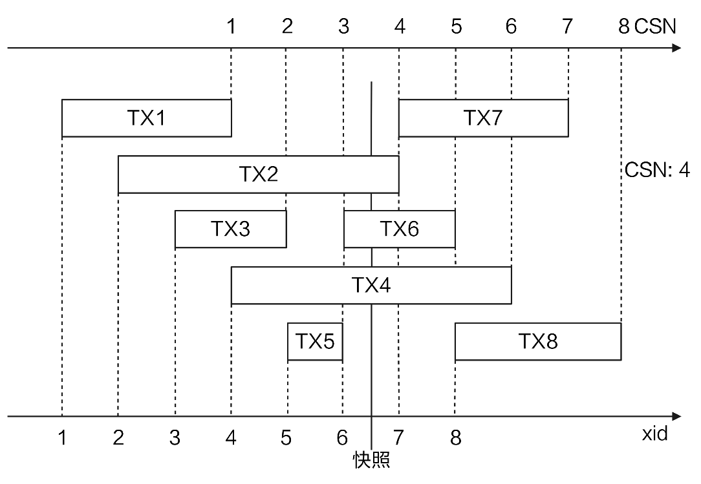
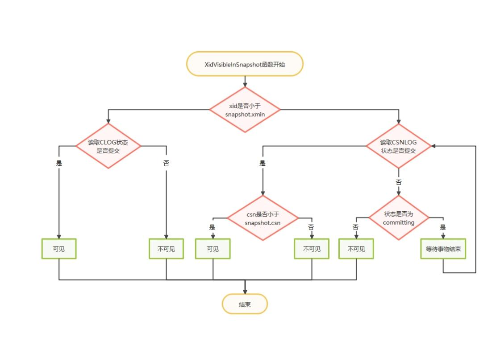
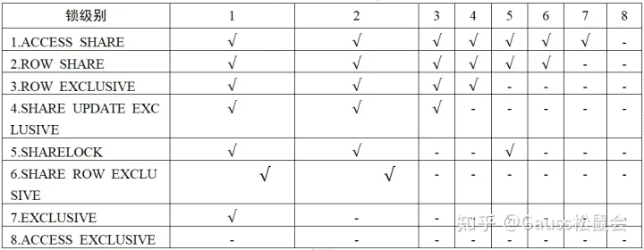

openGauss 内容准备
条评论45分钟，分块
1、DB 概述 1-2 min
2、初次上手 2-3 min 加吐槽
3、项目基本结构介绍 3-4 min
4、分布式事务有的没的各种技术 20min
5、事务以外的各种技术 10min
6、社区，前景。2min
DB 概述
openGauss是关系型数据库，采用客户端/服务器，单进程多线程架构；支持单机和一主多备部署方式，同时支持备机可读、双机高可用等特性。
支持标准SQL，到2003，有2011的大部分核心特性和一些可选。
开发接口 ODBC， JDBC
混合存储引擎支持
openGauss数据库支持行存储引擎、列存储引擎和内存存储引擎等。行存分为“inplace update” 和 “append update”两种模式，前者通过单独的回滚段（undo log）来保留元组的前像以解决读写冲突，可以更自然的支持数据更新；后者将更新记录混杂在数据记录中，通过新旧版本的形式来支持数据更新，对于旧版本需要定期做vacuum操作来支持磁盘空间的回收。列存支持数据快速分析，更适合OLAP（Online Analytical Processing，联机分析处理）业务。内存引擎支持实时数据处理，对有极致性能要求的业务提供支撑。
事务支持 ACID。显式 - 隐式。主要关注事务。
显式有：
Start transaction
Commit
Rollback
Set transaction 设置隔离级别，读写模式，可推迟模式
对基于 ARM 架构的 鲲鹏 有一些特殊优化
从华为的 Gauss db T (oltp) 开源而来，支持单节点，一主多备，不支持集群。
基于postgresql v8
初次上手：
东西很多。基础设施比较充分。编译可以有3种，release | debug | memcheck
随 src 附带一些测试。还有一些脚本工具，包括 ctags 的自动生成。
代码的移植性比较垃圾，在 CentOS 7.9 上用 gcc 7.3.0 编译。
必须用官方发布的第三方依赖库和相同发行版。否则问题超级多。
不知道 -enable-thread-safety 是什么实际作用。总之检查一直不过，只好 disable。
总之，更加现代的 bear、clangd 还没能成功整好…也许只能靠 IDE。
规模是140万行 c。
第一次dive in这种规模的项目…
基本结构：
公共组件
- 系统表，数据库初始化，多线程架构，线程池，内存管理，监控，模拟信号。
系统表 - 元数据。有数据库列表，拥有者，字符集 之类
初始化 - initdb + openGauss 进程
多线程 - 由 PostgreSQL 多进程改造而来。
1 | Postmaster 监听，监控子线程。 |
当然我们的重点是事务

事务
存储的子模块。
ACID
单机到分布式，双层的架构
GTM - CoordinatorNode - DataNode

(1)GTM(GlobalTransaction Manager,全局事务管理器),负责全局事务号的分发、事务提交时间戳的分发以及全局事务运行状态的登记。对于采用多版本并发控制(Multi-Version Concurrency Control,MVCC)的事务模型,GTM 本质上可以简化为一个递增序列号(或时间戳)生成器,其为集群的所有事务进行了全局的统一排序,以确定快照(Snapshot)内容并由此决定事务可见性。在本文openGauss并发控制中,将进一步详述 GTM的作用。
(2)CN(CoordinatorNode,协调者节点),负责管理和推进一个具体事务的执行流程,维护和推进事务执行的事务块状态机。
(3)DN(DataNode,数据节点),负责一个具体事务在某一个数据分片内的所有读写操作。本文主要介绍显式事务和隐式事务执行流程中,CN 和 DN 上事务块状态机的推演,以及单机事务和分布式事务的异同。
主要代码在 src/gausskernel/storage/access/transam
事务管理器 xact.cpp 8000行。xact = transaction
two-phase.cpp 3800 Lines. 二阶段提交
日志 xlog.cpp 19000 行 transaction log
clog.cpp transaction-commit log
csnlog.cpp: tracking commit sequence numbers and in-progress subtransactions
线程管理 procarray.cpp
MVCC 多版本并发控制
锁管理 写并发控制。isolation
首先是 transaction，执行的全貌。显式隐式，子事务，执行时的并发控制
（一）事务状态机
openGauss将事务系统分为上层（事务块TBlockState）以及底层（TransState）两个层次。
通过分层的设计，在处理上层业务时可以屏蔽具体细节，实现灵活支持客户端各类事务执行语句（BEGIN/START TRANSACTION/COMMIT/ROLLBACK/END）。
（1） 事务块TBlockState：客户端query的状态，用于提高用户操作数据的灵活性，用事务块的形式支持在一个事务中执行多条query语句。
（2） 底层事务TransState：内核端视角，记录了整个事务当前处于的具体状态。
首先是显式事务块，也就是由 BEGIN / START TRANSACTION 开启的事务。

在无异常情形下，一个事务块的状态机如图2所示按照默认（TBLOCK_DEFAULT）->已开始（TBLOCK_STARTED）->事务块开启（TBLOCK_BEGIN）->事务块运行中（TBLOCK_INPROGRESS）->事务块结束（TBLOCK_END）->默认（TBLOCK_DEFAULT）循环。剩余的状态机是在上述正常场景下的各个状态点的异常处理分支。
（1） 在进入事务块运行中（TBLOCK_INPROGRESS）之前出错，因为事务还没有开启，直接报错并回滚，清理资源回到默认（TBLOCK_DEFAULT）状态。
（2） 在事务块运行中（TBLOCK_INPROGRESS）出错分为2种情形。事务执行失败：事务块运行中（TBLOCK_INPROGRESS）->回滚（TBLOCK_ABORT）->回滚结束（TBLOCK_ABORT_END）->默认（TBLOCK_DEFAULT）；用户手动回滚执行成功的事务：事务块运行中（TBLOCK_INPROGRESS）->回滚等待（TBLOCK_ABORT_PENDING）->默认（TBLOCK_DEFAULT）。
（3） 在用户执行COMMIT语句时出错：事务块结束（TBLOCK_END）->默认（TBLOCK_DEFAULT）。由图2可以看出，事务开始后离开默认（TBLOCK_DEFAULT）状态，事务完全结束后回到默认（TBLOCK_DEFAULT）状态。
（4） openGauss同时还支持隐式事务块，当客户端执行单条SQL语句时可以自动提交，其状态机相对比较简单：按照默认（TBLOCK_DEFAULT）->已开始（TBLOCK_STARTED）->默认（TBLOCK_DEFAULT）循环。
子事务块 TBLOCK SUBxxx。基本就和事务块类似。。
TransState 也是类似的，只是是从事务真正执行的视角去看的。
1 | BEGIN; |
BEGIN, 开启事务块。
SELECT，开启一个底层事务执行该语句。
END 提交退出底层事务，结束事务块
几个函数，in tcop/postgres.cpp 这个文件是 traffic cop 的主模块。
BEGIN;
exec_simple_query 处理 begin 命令。
然后，它调用 start_xact_command 开始命令
- 调用
StartTransactionCommand，从 TBLOCK_DEFAULT 开始， - 先调用（底层）
StartTransaction，于是 TRANS_START。 - 完成内存，缓冲区，锁初始化。
- TRANS_INPROGRESS
- 返回，设为 TBLOCK_STARTED
PortalRun 处理 BEGIN 语句，最后在 BeginTransactionBlock 里 TBLOCK_BEGIN.
finish_xact_command 结束命令。调用 CommitTransactinCommand 设置 TBLOCK_INPROGESS。等待读取下一条命令。
SELECT;
exec_simple_query
start_xact_command，此时是 INPROGRESS，已经在事务块内部，直接返回不改变任何状态。
PortalRun 执行。ExecutorRun，根据执行计划，最优路径查询。
finish_xact_command 结束 query 命令。调用 CommitTransactionCommand，而事务块仍为 TBLOCK_INPROGRESS。不改变任何状态
END;
exec_simple_query
start_xact_command 不改变
PortalRun -> processUtility -> EndTransactionBlock，set TBLOCK_END
finish_xact_command -> CommitTransactionCommand，当前为 TBLOCK_END，继续调用CommitTransaction提交事务，设置底层状态为 TRANS_COMMIT，并且清理事务资源。最后 TRANS_DEFAULT。返回，上层事务块状态为 TBLOCK_DEFAULT。事务块结束。
（二）事务ID分配 and CLOG/CSNLOG
1 xid
transaction id , xid uint64 单调增。写在 HeapTupleHeader 的两个位置 xmin 代表插入的 xid, xmax 代表删除或修改的xid。
为节省空间，在 Page 上写 xid_base， 在 tuple 写 32 位 offset。
(溢出有调节)
只有写事务有 xid。“懒分配”。否则用太快。
子事务用到xid时，如果父务还没分配，则先分配父。确保子 > 父。（越晚越大）。
2 log，维护映射关系
CLOG: xid -> commit log
CSNLOG: xid -> CommitSeqNo log
内存资源有限，长事务可能存在，所以内存会放不下。因此要写盘。写了盘就要记下哪条是哪个事务…
CLOG以及CSNLOG分别维护事务ID->CommitLog以及事务ID->CommitSeqNoLog的映射关系。由于内存的资源有限，并且系统中可能会有长事务存在，内存中可能无法存放所有的映射关系，此时需要将这些映射写盘成物理文件，所以产生了CLOG（XID->CommitLog Map）、CSNLOG（XID->CommitSeqNoLog Map）文件。CSNLOG以及CLOG均采用了SLRU（simple least recently used，简单最近最少使用）机制来实现文件的读取及刷盘操作。
CLOG，xid 到提交状态
1 |
CSNLOG用于记录事务提交的序列号。openGauss为每个事务id分配8个字节uint64的CSN号，所以一个8kB页面能保存1k个事务的CSN号。CSNLOG达到一定大小后会分块，每个CSNLOG文件块的大小为256kB。同xid号类似，CSN号预留了几个特殊的号。CSNLOG定义代码如下
1 |
（三）MVCC 可见性判断机制
MVCC：
openGauss行存储表支持多版本元组机制，即为同一条记录保留多个历史版本的物理元组以解决对同一条记录的读、写并发冲突（读事务和写事务工作在不同版本的物理元组上）。
astore存储格式为追加写优化设计，其多版本元组产生和存储方式如图5所示。当一个更新操作将v0版本元组更新为v1版本元组之后，如果v0版本元组所在页面仍然有空闲空间，则直接在该页面内插入更新后的v1版本元组，并将v0版本的元组指针指向v1版本的元组指针。在这个过程中，新版本元组以追加写的方式和被更新的老版本元组混合存放，这样可以减少更新操作的I/O开销。然而，需要指出的是，由于新、老版本元组是混合存放的，因此在清理老版本元组时需要的清理开销会比较大。因此，astore存储格式比较适合频繁插入、少量更新的业务场景。
多版本并发控制来维护一致性。扫描数据的时候，每个事务看到的只是拿到快照当时的数据，而不是最新的数据。这样就避免看到并发事务的更新导致不一致了。读写就互相不阻塞，两个锁不冲突。
CSN 机制

每个非只读事务在运行过程中会取得一个xid号，在事务提交时会推进CSN，同时会将当前CSN与事务的xid映射关系保存起来（CSNLOG）。图5-12中，实心竖线标识取snapshot（快照）时刻，会获取最新提交CSN（3）的下一个值4。TX1、TX3、TX5已经提交，对应的CSN号分别是1、2、3。TX2、TX4、TX6正在运行，TX7、TX8是未来还未开启的事务。对于当前snapshot而言，严格小于CSN号4的事务提交结果均可见；其余事务提交结果在获取快照时刻还未提交，不可见。

（1） xid大于等于snapshot.xmax时，该事务id不可见。
（2） xid比snapshot.xmin小时，说明该事务id在本次事务启动以前已经结束，需要去CLOG查询事务的提交状态，并在元组头上设置相应的标记位。
（3） xid处于snapshot.xmin和snapshot.xmax之间时，需要从CSN-XID映射中读取事务结束的CSN；如果CSN有值且比snapshot.csn小，表示该事务可见，否则不可见。
提交流程

（1） 设置CSN-XID映射commit-in-progress标记。
（2） 原子更新NextCommitSeqNo值。
（3） 生成redo日志，写CLOG，写CSNLOG。
（4） 更新PGPROC将对应的事务信息从PGPROC中移除，xid设置为InvalidTransactionId、xmin设置为InvalidTransactionId等。
多版本快照
事务结束，快照记录到 环形缓冲区队列内存。别的线程获取快照就不用持有共享锁了，二是原子操作获取最新快照并加引用计数。拷贝完再减。引用计数为0时就可以释放。
比如我事务结束了。我放进去。只要没有新的版本，就可以留着。这个时候引用了，计数 + 1。然后我又更新，因为引用计数在，所以刷不掉这一项。
锁机制
自旋锁（spinlock）、轻量级锁（LWLock，light weight lock）和常规锁（或基于这3种锁的进一步封装）。
spin用于加锁时间短的场合。编码保证无死锁。尽量用 CAS。
LWLock轻量锁： 原子操作 + 等待队列 + 信号量。
- 两种，共享锁与排他锁
共享锁可供多个进程；排他锁是独占。
轻量级锁使线程睡眠阻塞。用于内部临界区操作比较长的场合。
加锁和解锁可能跨越函数。编码保证不产生死锁。openGauss 提供了检测机制。
LWLockReleaseAll 事务中出错，会把持有的所有锁全部回滚释放。
常规锁：哈希表实现。用于业务访问的数据库对象加锁。
有等待队列，并提供死锁检测。检测到死锁是，选择一个事务回滚。
提供了8个锁级别分别用于不同的语句并发：1级锁一般用于SELECT查询操作；3级锁一般用于基本的INSERT、UPDATE、DELETE操作；4级锁用于VACUUM、analyze等操作；8级锁一般用于各类DDL语句，具体宏定义及命名代码如下：
1 |

1 | typedef struct LOCKTAG { |
5个field 逐级标识被上锁的对象。type 为类型，比如 table, tuple, transaction. 很多很多。
1 | typedef struct LOCK { |
常规锁LOCK结构，tag是常规锁对象的唯一标识，procLocks是将该锁所有的持有、等待线程串联起来的结构体指针。
死锁检测
LWLock 有独立监控线程。watchdog + 时间戳。请求进入时记录时间，wait 的默认 timeout 为 5s。如果超过了，就触发真正的死锁检测。避免性能浪费。实际的检测就是根据锁的依赖关系进行线程之间的有向无环图判定。治愈死锁就是从环里调一个线程退出。
常规锁 冲突时设置定时器，再唤起进行死锁检测。
事务隔离级别
在openGauss中,隔离级别的实现基于 MVCC和快照机制,因此这种隔离方式被称为 快 照 隔 离 (Snapshot Isolation,SI)。目 前,openGauss 支 持 读 已 提 交 (Read Committed)和可重复读(Repeatable Read)这两种隔离级别。两者实现上的差别在于在一个事务中获取快照的次数。
如果采用读已提交的隔离级别,那么在一个事务块中每条语句的执行开始阶段,都会去获取一次最新的快照,从而可以看到那些在本事务块开始以后、在前面语句执行过程中提交的并发事务的效果。如果采用可重复读的隔离级别,那么在一个事务块中,只会在第一条语句的执行开始阶段,获取一次快照,后面执行的所有语句都会采用这个快照,整个事务块中的所有语句均不会看到该快照之后提交的并发事务的效果。
这三个事务的并发执行顺序可能交错。SELECT - INSERT - SELECT - INSERT - SELECT
考虑 T3事务三条查询的返回结果。如果采用“读已提交”的隔离级别,那么在第一条查询开始时,首次获取快照,T1和T2均没有提交,因此它们都在快照中,查询结果不会包含它们插入的新记录;在第二条查询开始时,第二次获取快照,T1已经提交,在第二条查询语句的快照中,只有T2,因此可以查询到 T1插入的记录 v1;同理,在第三条查询开始时,第三次获取快照,T1和 T2均已经提交,它们都不在第三条语句的快照中,因此可以查询到它们插入的记录v1和v2。
另一方面,如果采用可重复读的隔离级别,对于 T3中的三条查询语句,均会采用第一条语句执行开始时的快照,而 T1和 T2均不在该快照中,因此在该隔离级别下,T3的三条查询语句均不会返回v1和v2。
然后是持久化和故障恢复
WAL 日志 (write ahead log，预写日志)
行存储持久化和检查点。
如果数据库系统在事务提交之后、异步写入磁盘的脏页写入磁盘之前发生宕机，那么需要在数据库再次启动之后，首先把那些宕机之前还没有来得及写入磁盘的脏页上的修改所对应的日志进行回放，使得这些脏页可以恢复到宕机之前的内容。
基于如上原理，可以得出数据库持久化的一个关键是：在宕机重启的时候，通过某种机制确定从WAL的哪个LSN开始进行恢复；可以保证在该LSN之前的那些日志，它们涉及的数据页面修改已经在宕机之前完成写入磁盘。这个恢复起始的LSN，即是数据库的检查点。
脏页通过 bgwriter 和 pagewriter（作为唯一消费者） 写入磁盘。采用无锁的全局脏页队列数组记录。
pagewriter 实际写入磁盘（其实是缓存！）。Checkpointer 线程来 fsync （确保持久化）并推进 LSN。
故障恢复，从 checkpoint 开始回放 log。日志有多种类型，回放逻辑由各自的资源管理器实现。
当数据库发生宕机重启之后需要从检查点位置开始回放之后所有的日志。不同类型的日志的回放逻辑由对应的资源管理器来实现。
当用户业务压力较大时会同时有很多业务线程并发执行事务和日志记录的插入，单位时间内产生的日志量是非常大的。对此openGauss采用多种回放线程组来进行日志的并行回放，各个回放线程组之间采用高效的流水线工作方式，各个回放线程组内采用多线程并行的工作方式，以便保证日志的回放速率不会明显低于日志产生的速率。
最后是主备同步
日志复制。备机就回放。
walsender（主）walreceiver（备）
主机修改产生日志后，事务commit前需要同步日志到备机。采用Quorum一致性复制协议。多数备机完成日志同步即提交。这个过程中作为事务提交参考的是同步备，其他备机是异步备，作为冗余备份。
故障切换 failover：只有备机发生，主机异常了。
计划内切换 switchover： 主机降备，备机 failover。
leader 负责将自己的日志复制到其他节点，并维持心跳
follower 复制接受来自leader的日志，心跳超时时转换为candidate，给其 他candidate投票
Pre-Candidate Candidate 发起新任期投票，收集来自其他节点的投票
passive 复制接受来自leader的日志
logger 复制接受来自leader的日志，给其他candidate投票
preVote优化： 为防止网络断连导致节点频繁发起选主请求，term持续增加 在Follower变为Candidate前加入pre-candidate状态，发起term不变的 预选举流程，成功后才将term++发起正式选主流程 Lease优化： Leader与多数派断连主动降备，防止事实双主 在lease时间内不响应term更高的选主消息
复制流程
Client：日志复制线程
调接口，写 Buffer。每次写分配 idx。完事一致之后会有一个异步线程通知它已经多数派承认了，日志已提交。
进复制队列，工作线程会组包 + 压缩之类，传输到备机
备机收到后，会通过回放接口通知到数据库内核日志模块，去把日志replay一下。
日志采用全异步进行发送，不采用一问一答同步方式，提高系统整体吞吐量 Leader发送完一批log之后，直接更新next index，下次发送从这个点持续发送，不等follower响应回来； Follower等落盘线程写完一批log之后，将最新的落盘match_index发送给leader，持续反馈最新的落盘index； Leader通过这个来更新各节点的最新match_index，推进commit_index；
（多数派把一个Log落盘之后，一个事务就可以commit了）
总结：
一个备份级联，备到备是未来的方向。这是社区自己说的
一个是整体性能很强。AI 优化和多线程优化很猛。到处都是异步。
社区很活跃。
这次讲解也只是一点。以单机事务为主。分布事务讲得比较笼统。